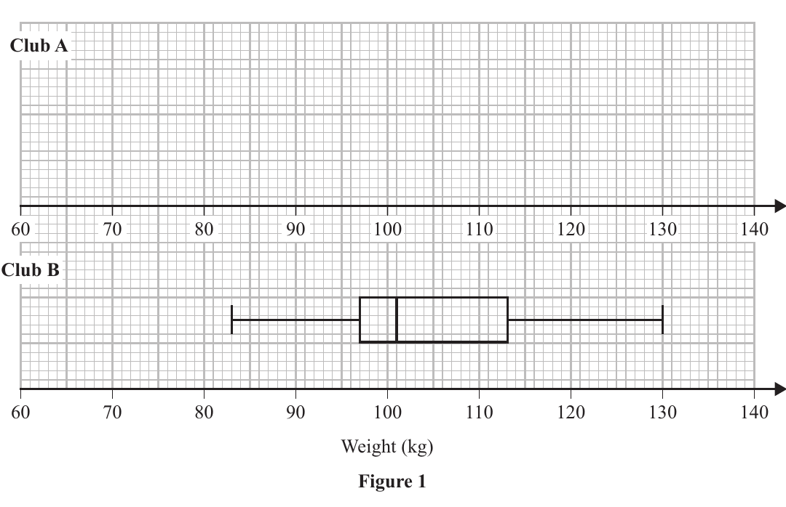
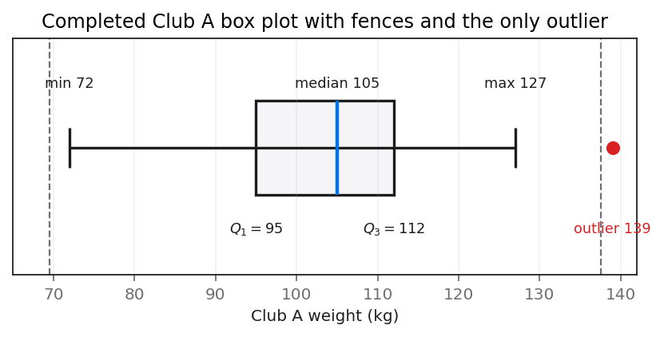

The weights, to the nearest kilogram, of 35 rugby players from club A are summarised in the stem and leaf diagram below.
Weight (kg) Totals 7 2 (1) 8 4 9 (2) 9 0 0 1 1 5 5 5 6 7 (9) 10 0 0 4 4 5 5 7 8 9 9 (10) 11 1 1 2 2 2 2 5 (7) 12 0 2 4 6 7 (5) 13 9 (1) Key: $7\mid2$ represents 72 kg
(a) Find the lower quartile and the upper quartile of the weights of these rugby players. (2)
An outlier is defined as an observation that is greater than $Q_3+1.5\times(Q_3-Q_1)$ or less than $Q_1-1.5\times(Q_3-Q_1)$
(b) Show that there is only one outlier for these data. (3)
Figure 1 on page 7 shows a box plot for the weights of rugby players from club B
(c) On the same grid, draw a box plot to represent the weights of rugby players from club A (4)
(d) Describe and interpret the skew of the distribution for club B, shown in Figure 1 (2)
Status: (a) and (c) accepted; the uniqueness wording in (b) and contextual interpretation in (d) were strengthened.

[11 marks: (a)2, (b)3, (c)4, (d)2]
The strategy is to use the ordered stem-and-leaf data and the $n=35$ quartile positions. Count from the smallest observation, identify the ninth and twenty-seventh values, and read their complete stem-and-leaf numbers with the key. Keep the data ordered rather than trying to average unrelated endpoints.
A stem-and-leaf diagram preserves every observation in ascending order. For an odd sample of 35, the median is the eighteenth value, leaving seventeen values below and seventeen above; the lower and upper quartiles are therefore the medians of those halves, at positions 9 and 27 in the full list.
Use the positions $Q_1$ at $(n+1)/4=9$ and $Q_3$ at $3(n+1)/4=27$. Equivalent median-of-halves counting gives the same positions. The key $7\mid2=72$ kg fixes place value: stem 9 with leaf 5 is 95 kg, not 9.5.
The lesson evidence records the quartiles as accepted, so no learner error is attributed. A neutral common trap is using $n/4=8.75$ and rounding inconsistently or forgetting that leaves repeat actual observations. Position counting on the ordered list avoids both problems.
The row totals provide an efficient positional map: positions 1, 2–3, 4–12, 13–22, 23–29, 30–34 and 35 correspond to stems 7 through 13. Thus position 9 is the sixth leaf in stem 9 and position 27 the fifth leaf in stem 11. This map ties each quartile to a printed leaf rather than an interpolated value.
The rank map stops at Q1=95 kg and Q3=112 kg. Transfer by marking ordered positions, using cumulative row totals to find local leaf indices, and applying the key only after the correct leaves are located.
Cumulative totals by stem are 1 after the 70s, 3 after the 80s, 12 after the 90s, 22 after the 100s, 29 after the 110s, 34 after the 120s, and 35 after the 130s. Position 9 lies in the 90s row and is 95; position 27 lies in the 110s row and is 112. Thus $\boxed{Q_1=95\text{ kg}}$ and $\boxed{Q_3=112\text{ kg}}$.
Use cumulative row totals as an index rather than rewriting all 35 observations. The difficult transition is converting an overall rank to a leaf within its row: rank 9 is leaf 6 after three earlier values, while rank 27 is leaf 5 after twenty-two earlier values. This part was accepted, so the evidence does not license a learner-error narrative; inconsistent n/4 rounding is merely a common alternative to avoid. Check that eight observations precede Q1 and eight follow Q3 within their respective halves, and that 95≤105≤112. Stop at Q1=95 kg and Q3=112 kg. In another ordered display, mark ranks first, use cumulative totals to locate rows, subtract preceding counts, and apply the printed key to restore place value.
Apply the exact outlier definition supplied by the question. Compute the interquartile range, multiply it by 1.5, form both fences, and compare the smallest and largest observations. Finish with an explicit uniqueness conclusion, not merely the statement that 139 exceeds the upper fence.
The specification allows different outlier rules, so the rule printed in this question controls the method. The IQR measures the middle-half spread; extending 1.5 IQR below $Q_1$ and above $Q_3$ creates the two boundaries. Every observation outside either boundary is an outlier under this definition.
Use $IQR=Q_3-Q_1$, lower fence $=Q_1-1.5IQR$, and upper fence $=Q_3+1.5IQR$. These are fences, not whisker endpoints. The whiskers later stop at the most extreme non-outlying observations.
The lesson evidence says the student located 139 but the wording did not unambiguously conclude uniqueness. The correction is therefore the final sentence ‘139 is the only outlier.’ It would be unsupported to claim use of a mean-plus-two-standard-deviations rule; the source specifically supplies the IQR rule.
Only three source observations decide uniqueness after the fences are found: minimum 72, maximum 139 and next maximum 127. Their comparisons establish no lower outlier, one upper exceedance and no second upper exceedance. This is stronger than scanning every leaf and directly matches the command ‘only one’. The fence values themselves are thresholds, not observations or box-plot whisker coordinates.
The setup’s required endpoint is that 139 kg is the only outlier, with 72 and 127 proving the two adjacent boundaries safe. Transfer by applying the rule printed in the question and checking both tails plus the next extreme.
From part (a), $IQR=112-95=17$ and $1.5IQR=25.5$. Therefore the lower fence is $95-25.5=69.5$ and the upper fence is $112+25.5=137.5$. The minimum 72 is above 69.5, so there is no lower outlier. The maximum 139 exceeds 137.5, and the next largest value is 127, which is below 137.5. Hence $\boxed{139\text{ kg is the only outlier}}$.
After obtaining IQR=17, evaluate both fences and then inspect only the decisive extremes. The difficult transition is proving uniqueness rather than merely identifying one exceedance: 139 is above 137.5, but 127—the next largest—is not, and 72 is above the lower fence 69.5. Evidence says the learner found 139 but needed the uniqueness conclusion strengthened; it does not support substitution of a different outlier convention. Check the compact ordering 69.5<72<127<137.5<139. This ordering is the intermediate audit trail: it places the minimum, next maximum and maximum against both calculated thresholds and demonstrates why no uninspected middle observation can be an outlier. The stopping point is ‘139 kg is the only outlier,’ with both fence calculations visible. Transfer by treating printed fences as classification thresholds, checking both tails, and naming the adjacent non-outlying extreme whenever the command includes ‘only’.
Construct the Club A box plot from the five-number summary after excluding the outlier from the upper whisker. Place the quartiles and median accurately, draw the box and whiskers on the shared scale, and plot 139 as a separate point. The diagram must encode values, not just resemble a box.
A modified box plot uses the most extreme non-outliers for its whisker endpoints. Part (b) established that 139 is outside the upper fence, so it cannot be the upper whisker. The next largest observation, 127, is the upper whisker; 72 remains the lower whisker because it is not an outlier.
The required plotted values are lower whisker 72, $Q_1=95$, median 105, $Q_3=112$, upper whisker 127, plus an isolated outlier at 139. A box spans $Q_1$ to $Q_3$, a line marks the median, and whiskers connect the box to 72 and 127.
The lesson evidence records part (c) as accepted. A neutral diagram trap is using 139 as the whisker or forgetting to plot it at all. Another is drawing by eye without using the axis grid; the four method components depend on the correct numerical positions.
Separate the plotting inventory into five connected features and one detached feature: whisker cap 72, box edge 95, median line 105, box edge 112, whisker cap 127, then the isolated point 139. This source-specific sequence can be read left to right against the 60–140 grid and prevents the upper fence 137.5 from being drawn as though it were measured data.
The plotted stopping inventory is 72, 95, 105, 112, 127 with isolated 139. Transfer by separating actual observations from fences, then reading the finished box plot back into the same six values as a graphical audit.
On the common 60–140 kg axis, draw a horizontal whisker from 72 to 95, a box from 95 to 112, a median line at 105, and a horizontal whisker from 112 to 127. Add end caps at 72 and 127 and mark 139 separately. The completed values are summarised by $\boxed{72,95,105,112,127;\ \text{outlier }139}$. The visual below is generated from exactly those numbers.

Plot from a six-item inventory rather than drawing an approximate shape: 72, 95, 105, 112, 127, and the detached 139. The difficult transition is recognising that 137.5 is an outlier fence, not a measured whisker endpoint; the upper whisker must stop at the largest actual non-outlier, 127. Lesson evidence marks this drawing accepted, so only neutral graphical traps may be mentioned. Check by reading the completed plot back: the box width is the IQR 17, the median lies within it, both whiskers end at observed values, and 139 sits beyond the fence. The answer stops at the completed Club A plot on the shared scale. Transfer by preparing the plotting inventory before touching the grid and keeping fences separate from data features.
Describe the direction of skew for Club B and then interpret that shape using rugby-player weights. Use the unequal distances around the median in the supplied box plot: the upper side is more spread out than the lower side. The interpretation must mention variation and the context.
A box plot shows skew through asymmetry of the box and whiskers. In Figure 1, the spread from the median toward the upper quartile and upper whisker is greater than the corresponding spread below the median. This longer high-weight side indicates a right tail, conventionally called positive skew.
Positive skew means the distribution has greater spread or a longer tail above the median than below it. For a box plot, compare $Q_3-Q_2$ with $Q_2-Q_1$ and the upper with lower whisker lengths; do not use ‘positive correlation’, which describes paired variables rather than one distribution.
The lesson evidence records that the student identified positive skew but omitted the contextual interpretation. The strengthened response therefore adds only the supported variation-above-the-median statement. It does not recast the issue as a calculation error or claim the student misread Club A.
Use the supplied Club B picture only: compare its median-to-upper-box distance and upper whisker with the corresponding lower-side distances. The visibly longer high-weight side is evidence for positive skew. Club A's newly drawn values, its outlier and its quartiles must not leak into this interpretation, because part (d) explicitly redirects attention to the printed Club B distribution.
The complete stopping statement is positive skew with Club B weights more varied above the median. Transfer by coupling every shape label to a context-bounded comparison of spread and avoiding unsupported claims about individual players or paired-variable correlation.
The description is $\boxed{\text{Club B is positively skewed}}$. The contextual interpretation is: the weights of Club B rugby players are more varied above the median weight than below the median. Equivalently, heavier-than-median players extend across a wider range than lighter-than-median players. Both the named skew and its contextual meaning are required.
Read only the printed Club B geometry: the upper side of the median spans farther than the lower side. The difficult transition is adding an interpretation after naming the shape; ‘positively skewed’ alone does not explain what the box plot says about player weights. Evidence supports that the learner identified the direction and the tutor strengthened the contextual sentence, but not that Club A was confused with Club B. Check that the wording names weights, compares variation above and below the median, and avoids correlation language. Stop with positive skew and the conclusion that weights above the median are more varied. On transfer, pair every skew label with a context sentence about relative tail or spread, bounded by what the displayed summary can show.